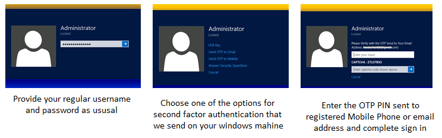

Multi Factor AuthenticationMulti Factor Authentication is an additional security feature for your Windows Machines that is designed to prevent anyone from accessing or using your computer, even if they know your username and password. It requires you to verify your identity using first factor i.e your username and password and second factor which only you knows or you have , it can be Your USB disk or OTP Pin send on your Mobile phone or email address and Security questions which only you knows |
||
|  | ||
|
Your Laptop/PC is the key to many things you do on a day to day basis. It's important that only you have the ability to access your machine, update your machine, access the data you store . CionSystems Multi Factor Authentication is a feature you can use to keep your personal information as secure as possible. |
||
Benefits
|
||
|
After you sign in, you can securely access your System. With both your username password 1st factor and the 2nd factor which you have i.e your USB Disk , OTP Pin send to your Mobile Phone or Email Address or Security Questions which you only know. In case of failure in any of the two factors , access to your account will be denied. |
||